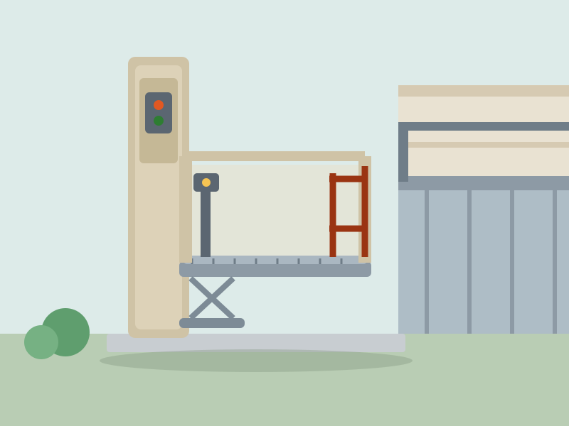
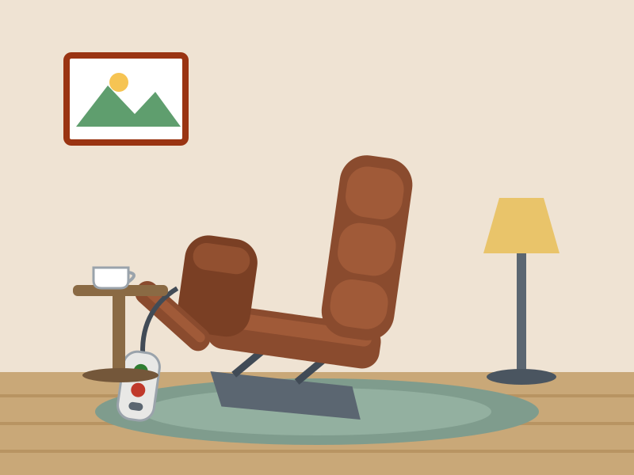
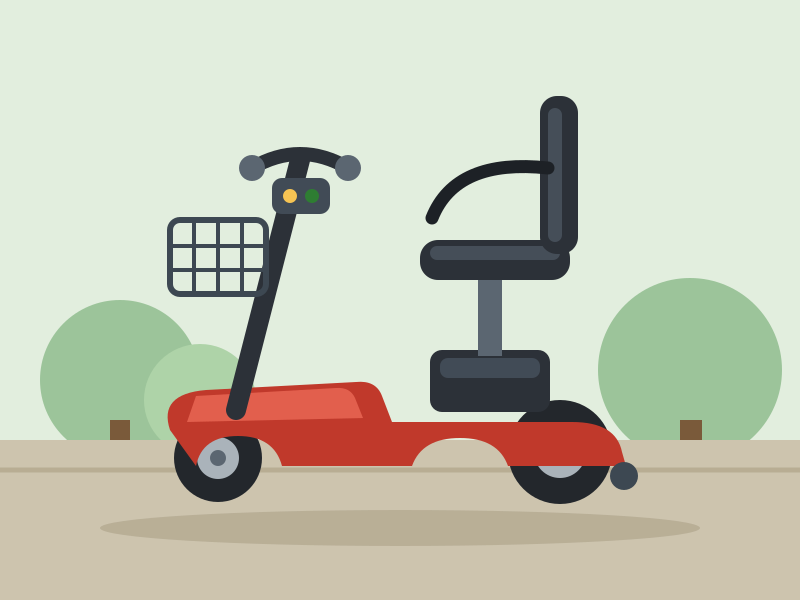
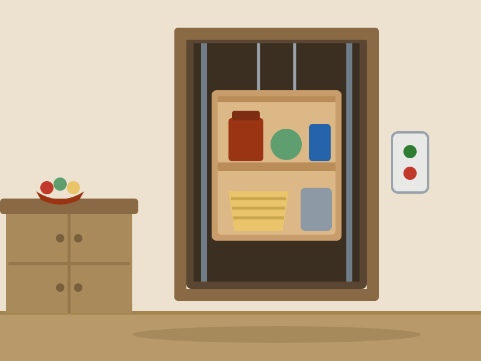
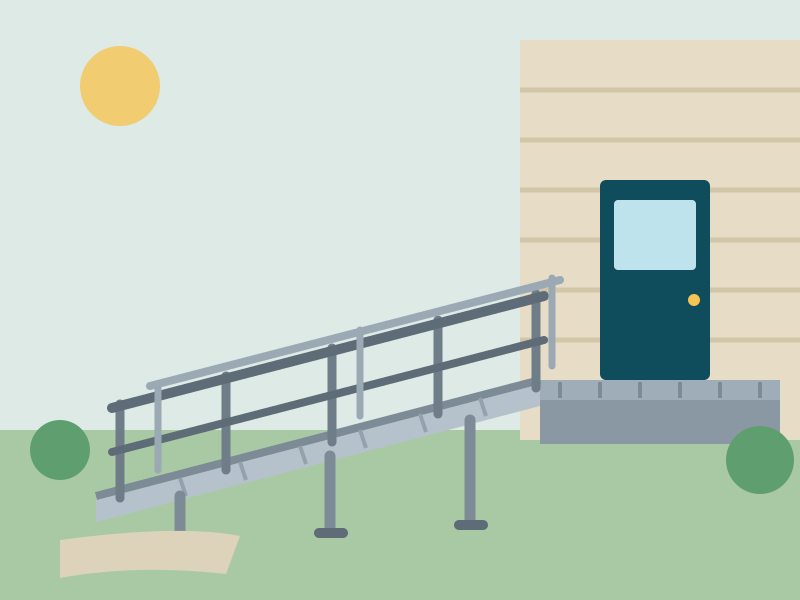

Stair Lifts & Home Access
Stair Lifts & Home Access
AmeriGlide Rave 2 Stair Lift Review: Best Seller for Aging in Place
The best-selling straight stair lift in America keeps your whole home within reach — and folds to just over 11 inches when you're not using it.
Home › Blog
In-depth product reviews, the latest accessibility technology, and health-care updates that matter to anyone determined to age well at home. Written by occupational therapists and certified aging-in-place specialists.
Stair Lifts & Home Access
The best-selling straight stair lift in America keeps your whole home within reach — and folds to just over 11 inches when you're not using it.
 Stair Lifts & Home Access
Stair Lifts & Home Access
A whisper-quiet premium straight lift with a contoured ergonomic seat and self-diagnostics — the upgrade pick for riders who use a lift many times a day.

Stair Lifts & Home AccessAn elevator-grade outdoor platform lift that carries a wheelchair, scooter and companion straight up to porch level — 750 lb of capacity, rain or shine.
 Bathroom Safety
Bathroom Safety
Lower yourself gently to the bottom of your own tub — and rise back out again — at the touch of a waterproof button. No remodel, no plumber, no compromise.
 Bathroom Safety
Bathroom Safety
Step over a low threshold, close the watertight door, and soak chest-deep from a built-in seat — with optional hydrotherapy jets for arthritic joints.

Comfort & Daily LivingThe 'Cadillac of lift chairs' — true zero-gravity recline, a gentle powered lift to standing, and bucket-seat comfort people end up sleeping in nightly.

MobilityAmerica's favorite travel scooter breaks down into five pieces in under a minute — the heaviest under 30 pounds — and rides up to 12 miles per charge.
 Bathroom Safety
Bathroom Safety
A powered seat that lowers you fully onto the toilet and raises you back to standing — restoring the most private kind of independence there is.

Stair Lifts & Home AccessThe unsung hero of multi-story living: send laundry, groceries and firewood between floors so the only thing the stairs ever carry is you.

MobilityHospital discharge on Friday, accessible front door by Saturday afternoon: a configurable aluminum ramp with handrails that installs without concrete or permits in most areas.